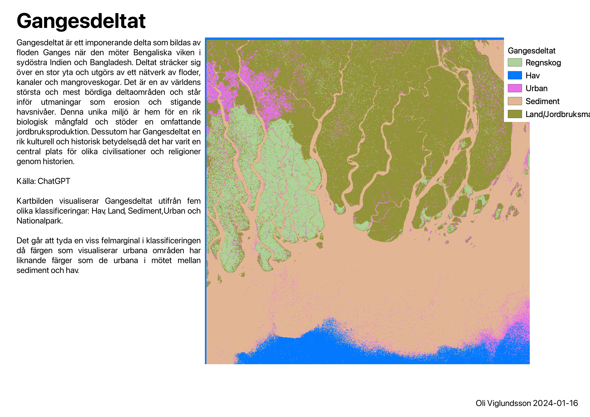
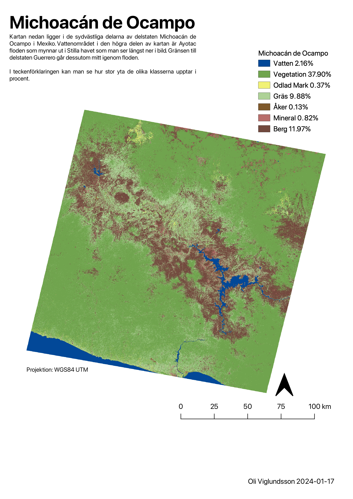

Satellite analysis
In these excercises the goal was to analyze and classify satellite images in order to calculate or document changes in vegetation, forested areas, sediment and other interesting types of land.
Project Details / Background
So first off we had to learn how to use Multispec in order to classify the satellite images that we were going to use in these excercises. Multispec, is a software application used for analyzing multispectral and hyperspectral remote sensing data. It provides a range of tools and functionalities for processing, analyzing, and visualizing imagery captured by satellite sensors, airborne sensors, and other remote sensing platforms.
All satellite captures that were used in these excercises are multispectral imagery provided by USGS (United States Geological Survey).
Image Gallery
 Here is the original satellite capture from Landsat7 in .tif format
Here is the original satellite capture from Landsat7 in .tif format
 Here we see what it looks like when imported into Multispec. As you can see different classes are plotted out
Here we see what it looks like when imported into Multispec. As you can see different classes are plotted out

Here we have the outcome of the first excercise where we had to classify the Ganges delta.
 Here is another satellite capture from Landsat7 in .tif format from a rural area in southeast Mexico
Here is another satellite capture from Landsat7 in .tif format from a rural area in southeast Mexico

Here we have the classified image of the area
Deforestation
In a later exercise we were provided with two historical satellite images (1975) over two different areas in the Amazonas to classify. In addition to the historical images we classified the same area in 2016. The aim was to highlight the deforestation that has been going in this region.
The historical satellite images highlight how thick and compact the rainforest was during the time but its clear pathways were prepared for and that these areas were about to change. So as one can see there has been a significant change over the years.